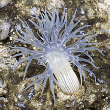
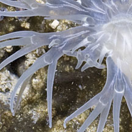
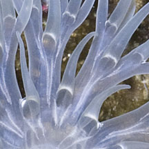

|
|
| sea anemones text index | photo index |
| Phylum Cnidaria > Class Anthozoa > Subclass Zoantharia/Hexacorallia > Order Actiniaria |
| Branched-tentacle
mangrove anemone Pelocoetes exul Family Haliactiidae updated Dec 2024 Where seen? This small anemone with branching tentacles is sometimes seen in soft mudflats near mangroves and freshwater flows at the Kranji Dam sluice gate. It is often found among Petal-mouthed mangrove anemones, in much smaller numbers. Features: Diameter with tentacles expanded about 2cm. Few transparent tentacles. Each tentacle is branched at least once ending in tapering tips, with narrow white rings where the tentacles branch or attach to the oral disk. Oral disk tiny. Body column pale with fine white stripes. Status and threats: As at 2024, it is listed as Critically Endangered in Singapore. |
 Kranji, Jul 09 |
 |
 |
| Branched-tentacle mangrove anemones on Singapore shores |
On wildsingapore
flickr
|
Acknowledgements
|